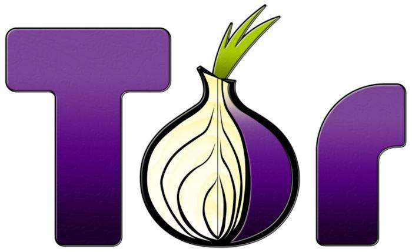
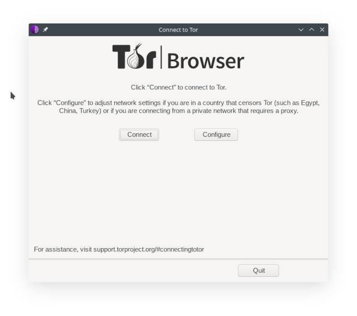
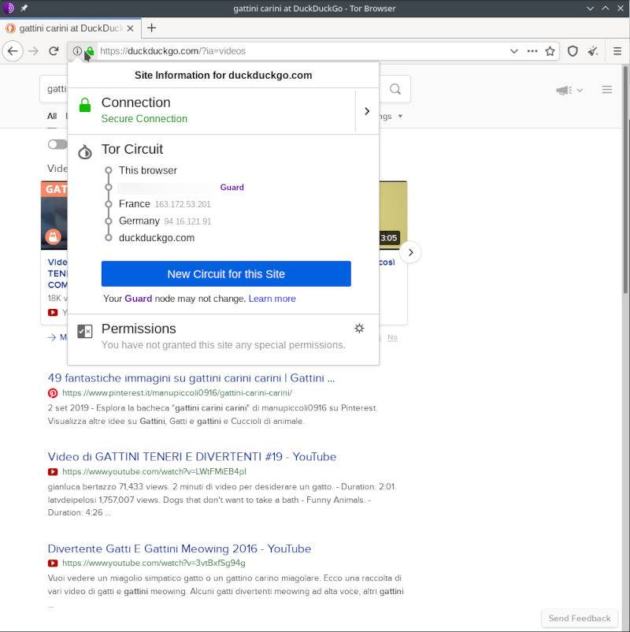

Tor è un acronimo: sta per “The Onion Router”. Tor è un protocollo di comunicazione in rete che si pone come obiettivo principale quello di mantenere l’anonimato e la privacy dei suoi utenti.
Non entrerò in dettagli, ma ecco sostanzialmente quello che succede quando utilizzi Tor.
Quando cerchi di collegarti ad un sito, in condizioni normali la tua richiesta viene inviata direttamente al server responsabile del sito in questione (gli esperti non me ne vogliano, sto semplificando). Questa richiesta, oltre che al nome del sito, contiene anche altre informazioni, come il tuo indirizzo IP, che possono identificare univocamente il tuo computer su internet.
Il compito di Tor è quello di utilizzare tre “strati” di cifratura per nascondere queste (ed altre) informazioni ad occhi indiscreti. Dopodichè la tua richiesta viene fatta rimbalzare attraverso tre relays, server sparsi in giro per il mondo, i quali decifrano il tuo messaggio uno strato alla volta (ecco perchè il nome “onion”!). Infine, la richiesta giunge a destinazione.
Tutti questi passaggi rallentano la tua connessione ad internet, ma impediscono a chiunque si trovi tra te e il server di conoscere qualsiasi informazione tu stia trasmettendo. Inoltre, il server non avrà modo di sapere che sei stato tu a fare quella richiesta, perchè vedrà solamente l’indirizzo IP del terzo ed ultimo relay, rendondoti in questo modo anonimo!
Carino, no? Ovviamente ho semplificato parecchio, e ottenere anonimato perfetto su internet è praticamente impossibile in pratica, ma Tor è uno strumento che permette di andarci molto vicino.
Come ho accennato prima, quando utilizzi internet ogni giorno la tua connessione non è nè anonima nè privata (no, neanche se usi la modalità incognito di Google Chrome, furbacchione!
Il tuo ISP (Internet Service Provider), per esempio, può vedere tutti i nomi dei siti che stai visitando. Così come può farlo quel tipo sospetto seduto dietro di te in biblioteca: quello con la felpa nera e il cappuccio sollevato, che probabilmente è collegato alla tua stessa rete WiFi gratuita.
Non preoccuparti troppo però: lo vedi quel lucchetto accanto alla barra degli indirizzi del tuo browser, sulla sitistra? Indica che la connessione è HTTPS, perciò dovrebbe impedire agli altri di vedere esattamente quello che stai scrivendo o guardando sul sito. Certo, se il ragazzo di prima vede che ti sei collegato a www.fotodigattinicarini.it non sono necessarie molte infomazioni aggiuntive per capire cosa tu stia facendo.
Questo già di per sè potrebbe preoccuparti un pochino, dato che probablimente non vuoi che tutti siano in grado di vedere quello che cerchi ogni giorno su Google. Oppure potresti esserne indifferente, perchè “non hai niente da nascondere”.
In entrambi i casi, prova ora ad immaginare di vivere in un Paese in cui rischi di essere incarcerato se vieni sorpreso a guardare foto di gattini. Sei appena tornato dal lavoro, hai avuto una giornata stressante: vorresti pensare ad altro, trovare qualcosa per distrarti un po’. Ma non puoi. Perchè il 74% di internet è composto da foto di gattini (la statistica è reale, ma non andate a controllare), e il tuo governo ha deciso di censurare tutti i siti che potrebbero contenere le immagini incriminate: niente Instagram, niente Youtube, niente Reddit. Esatto, neanche TikTok. Una catastrofe.
E magari, mentre stai rispolverando quel libro che avevi comprato tre anni fa ma che non hai mai avuto il tempo di leggere, inizi a pensare.
Pensi a quelli che vivono in paesi in cui è la libertà di parola ad essere vietata. Paesi in cui gli attivisti e i giornalisti vengono arrestati solo per avere espresso una loro opinione su un sito o sui social.
Queste persone in particolare hanno estremo bisogno di mezzi per poter cumunicare liberamente, senza censure. Devono poter esprimere le loro opinioni senza preoccuparsi di come un governo oppressivo potrebbe reagire.
In questo ed in altri casi, Tor potrebbe essere uno strumento utile.
Questo non significa che una persona qualunque non possa usarlo. Anzi, più persone utilizzano Tor, più questo diventa efficace!
Quindi, se vuoi navigare in sicurezza e guardare foto di gattini senza nessuna preoccupazione, continua pure a leggere!
Il modo più semplice per utilizzare Tor (e probabilmente anche il più sicuro) è scaricare il Tor Browser. Il pulsante qui sotto ti porterà alla pagina ufficiale del Tor Projoect, e potrai scegliere la versione per il tuo sistema operativo.
C’è anche una versione per Android!
Una volta scaricato ed avviato, ti troverai davanti ad una schermata simile a questa:
Il pulsante “Configure” contiene delle opzioni avanzate, che permettono di utilizzare Tor anche se nella tua zona Tor è censurato, ma nella stragrande maggioranza dei casi non è necessario toccarlo.
Una volta cliccato “Connect”, avrai davanti la schermata principale del browser!
A prima vista non sembra molto direrso da un comune browser, infatti si basa su Firefox. Ma le apparenze ingannano!
Puoi utilizzarlo come un normale browser, ma ogni ricerca che farai passerà attraverso il protocollo Tor, rendendo la tua navigazione sicura ed anonima!
Facendo una qualsiasi ricerca, e cliccando sul lucchetto verde nella barra degli indirizzi, potrai anche vedere il percorso che Tor sta compiendo in giro per il mondo prima di raggiungere il sito!
Ora sei libero di sbizzarrirti
Un’ultima cosa: non cambiare nessuna impostazione del browser.
Uno dei motivi per cui stai usando Tor è essere anonimo. Se tu sei l’unica persona che usa il Tor Browser con una determinata impostazione, o con un particolare plugin, questo anonimato viene compromesso. Devi essere indistinguibile dalla massa di utenti di Tor!
L’unica impostazione che sei incoraggiato a cambiare è il livello di sicurezza.
In alto a destra, accanto alla barra degli indirizzi, vedrai uno scudo. Cliccaci sopra, e clicca su “Advanced Security Settings” (o il suo equivalente in italiano).
Leggi le opzioni, e scegli quella che ritieni più opportuna.
Tieni presente che l’ultima è l’opzione più sicura, ma questa ti impedirà di visualizzare correttamente molti siti che visiterai. Sta a te scegliere: sicurezza o comodità?
Trovo che questo articolo si stia dilungando troppo, quindi la farò breve, tanto internet è pieno di informazioni a riguardo, basta saper cercare! (Su DuckDuckGo ovviamente).
Tor Browser, oltre a mantenere il tuo anonimato durante la navigazione online, permette anche di accedere ad una serie di siti internet che non sono indicizzati da nessun motore di ricerca.
Non sono accessibili da un comune browser, ma solo tramite Tor.
Questi siti terminano tutti con .onion, e sono propramente chiamati hidden services.
L’insieme di questi siti costutuisce quello che viene comunemente chiamato dark web.
Non farti spaventare dal nome!
Se ne hai già sentito parlare, tieni presente che è molto meno spaventoso di come viene descritto: si tratta solamente di siti più difficili da trovare, che garantiscono un livello di anonimato molto elevato, sia per chi vi accede, sia per il sito stesso.
Naturalmente, la natura stessa di questi hidden services ha attirato l’attenzione di molte attività illecite, ed è qui che l’immaginario comune pone l’accento quando descrive la darknet.
Tuttavia, chiunque può attivare un hidden service, ed avere il proprio sito onion. Ne ho uno anche io!
Qua sotto e nella barra laterale trovi il link.
frablogoohdbhhvwiodgbrbnyvwzu4blzohdl6rg6shw7i6zmgm2k3yd.onion
Tutti gli indirizzi dei siti onion che incontrerai sono lunghi e illeggibili, quindi preparati ad una sessione intensiva di copia e incolla!
RACCOMANDAZIONE IMPORTANTE
Se decidessi di avventurarti in cerca di altri onions, usa sempre l’opzione più sicura di Tor Browser! E in ogni caso, ricorda che lo stai facendo a tuo rischio e pericolo, non mi ritengo responsabile di quello che potresti trovare.
Beh, credo che questo articolo sia lungo a sufficienza!
Spero di aver suscitato in te almeno un po’ di curiosità riguardo a Tor, e alla privacy online in generale.
Si tratta di un argomento molto vasto, che sicuramente non è possibile trattare in un solo articolo.
Se sei interessato e vuoi saperne di più, lascio qua sotto qualche link che potresti trovare utile!